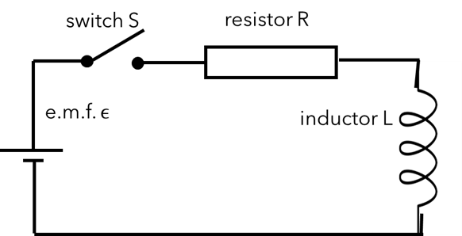
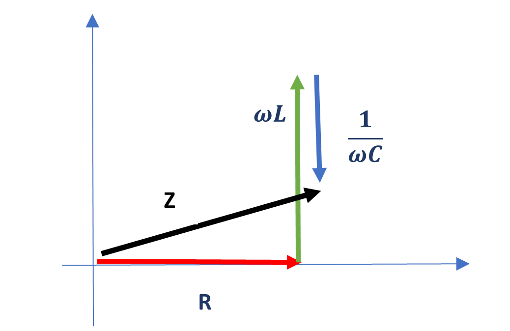

Chapter 4 Circuits
Aims of this section
At the end of this section you should be able to
Analyse DC circuits containing resistance, capacitance and inductance and with more than one source of EMF to determine the current flowing at any point.
Analyse AC circuits including the same types of components using complex notation for impedance to determine the current and its phase relation to the applied voltage.
Determine the parameters associated with oscillations in LC and LCR circuits including the energy stored.
Assumed knowledge
Conventional current is the flow of positive changes from more positive potential to less positive potential. (Tipler & Mosca 25-1)
Ohm’s Law – \(V = IR\) (Tipler & Mosca 25-2)
Expressions for combining resistors (and impedances in general) in series and parallel (Tipler & Mosca 25-4):
Series - \(R = R_1 + R_2+ R_3 + ...\)
Parallel – \(\frac{1}{R} = \frac{1}{R_1} + \frac{1}{R_2} + \frac{1}{R_3} + ...\)
4.1 Components in circuits
We consider the following components;
Sources of Electromotive force (EMF) that produce a potential difference between their terminals
Cells (batteries)
Generators
Resistors
Capacitors
Inductors
These components present obstructions to current flow through circuits.
4.1.1 Resistors
Recommended reading: Tipler & Mosca 25-2
Resistors are passive components that resist the flow of current within
the circuit. Resistance is a type of impedance. Resistance is measured
in Ohms (\(\Omega\)) where
\(1 \; \Omega = \frac{1 \; \text{V}}{1 \; \text{A}} = 1 \; \text{kg} \; \text{m}^2 \; \text{A}^{-2} \; \text{s}^{-3}\)
Ohmic resistors obey Ohm’s Law, which is
\[\begin{equation}
\tag{4.1}
V = IR
\end{equation}\]
For an Ohmic resistor the resistance does not depend on current or potential drop. Real resistors will show some change in resistance with temperature.
4.1.2 Capacitors
Recommended reading: Tipler & Mosca 24-3
Capacitor are reactive components. They have the intrinsic property of capacitance and because of this offer reactance to a change in voltage. Reactance is a type of impedance that depends on the applied voltage, in particular, the frequency of an alternating voltage.
Capacitance is measured in Farads (F) where
\(1 \; \text{F} = \frac{1 \; \text{C}}{1 \; \text{V}} = 1 \; \text{A}^2 \; \text{s}^4 \; \text{kg}^{-1} \; \text{m}^{-2}\)
Capacitors are devices that store charge. The capacitance indicates how much charge can be stored at a given voltage. The relationship between voltage (\(V\)), charge (\(Q\)) and capacitance (\(C\)) in a capacitor is therefore
\[\begin{equation} \tag{4.2} V_C = \frac{Q}{C} \end{equation}\]
4.1.3 Inductors
Inductors are reactive components. They have the intrinsic property of inductance and because of this offer reactance to a change in current.
Inductance \(L\) is measured in Henrys (H), where
\(1 \; \text{H} = \frac{1 \; \text{V} \; \times 1 \; \text{s} } { 1 \; \text{A} } = 1 \; \text{kg} \; \text{m}^{2} \; \text{s}^{-1} \; \text{A}^{-2}\)
Inductors are devices that resist a change in current because the changing magnetic field produced in the inductor by a changing current induces an EMF that opposes the change in current in the device itself:
\[\begin{equation} \tag{4.3} V_L = -L \frac{\mathrm{d} I}{\mathrm{d} t} \end{equation}\]
Figure 4.1: Symbols for a) a resistor, b) a capacitor and c) an inductor commonly used in circuit diagrams.
4.2 Kirchhoff’s Rules
Recommended reading: Tipler & Mosca 25-5
Kirchoff’s Rules are simple rules which can be applied to any electrical circuit to compute voltages and currents.
4.2.1 The loop rule
The loop rule expresses conservation of energy within the circuit. When
current flows around any closed loop in the circuit the sum of all the
potential changes must be zero otherwise energy would not be conserved.
The rule states:
“Around any closed loop the algebraic sum of the changes in potential
must equal zero"
\[\begin{equation} \tag{4.4} \sum_i \epsilon_i =0 \end{equation}\]
4.2.2 The junction rule
The junction rule expresses conservation of charge within a circuit.
Charge doesn’t collect at junctions so any flow of current in must be
matched by current flow out of a junction. The rule states:
“The algebraic sum of currents into a junction must be equal to zero"
\[\begin{equation} \tag{4.5} I_1 = I_2 + I_3 \end{equation}\]
4.3 Capacitors in DC circuits
Recommended reading: Tipler & Mosca 25-6
A capacitor connected to a DC voltage source \(V\) will charge until \(V _C\) (voltage across the capacitor) \(= V\). If there was no resistance this would be instantaneous. But real circuits have resistance so there is some transient behaviour. In most A-level syllabuses this is covered at some level by considering the discharging of capacitors. Here we look at a capacitor charging.
Example: Series RC circuit
When the switch is closed a current flows in a clockwise direction.
Considering the potential difference to be positive if it increases in a
clockwise direction.
The potential difference across the source of EMF is \(+\epsilon\).
The potential difference across the resistor is \(-IR\).
The potential difference across the capacitor is \(-\frac{Q}{C}\).
The current \(I\) and charge \(Q\) are related by \(I = \frac{\mathrm{d} Q}{\mathrm{d} t}\).
From Kirchoff’s loop rule the sum of all the voltages is
\(0 \therefore +\epsilon - IR - \frac{Q}{C} = 0\).
Substituting for \(I\) we get
\(\epsilon - \frac{\mathrm{d} Q}{\mathrm{d} t} R - \frac{Q}{C} = 0\) and the solution of
that equation is
\(Q = \epsilon C \left(1 + \exp\left(-\frac{t}{RC} \right) \right)\) and
the current is
\(I = \frac{\mathrm{d} Q}{\mathrm{d} t} = \frac{\epsilon}{R} \exp\left( - \frac{t}{RC} \right)\).
We can then calculate the voltage across the different components as a
function of time.
The capacitor:
\(V_C = \frac{Q}{C} = \epsilon \left(1 - \exp \left(- \frac{t}{RC} \right) \right)\).
The resistor:
\(V_R = IR = \frac{\mathrm{d} Q}{\mathrm{d} t} R = \epsilon \exp\left(- \frac{t}{RC} \right)\).
4.4 Inductors in DC circuits
Recommended reading: Tipler & Mosca 28-6
The current through an inductor connected to a DC voltage will increase
continuously. If there was no resistance this would continue for ever.
But real circuits have resistance so there is some transient behaviour
which is similar to the LC circuit capacitors but not quite the same.
For the LR circuit shown below, the current and potential differences as
a function of time are
Current:
\(I = \frac{\epsilon}{R} \left(1 - \exp\left(-\frac{Rt}{L}\right) \right)\).
Potential difference across the inductor:
\(V_L = \epsilon \exp\left(- \frac{Rt}{L} \right)\).
Potential difference across the resistor: \(V_R = \epsilon \left (1 - \exp \left( - \frac{Rt}{L} \right) \right)\).

4.5 Oscillations in LC and LCR circuits
Recommended reading: Tipler & Mosca 29-4, 29-6
Consider this circuit which includes a capacitor and inductor. Some charge is introduced, for example by connecting a battery across the capacitor. If the battery is then removed, we can calculate what happens next.
Example: LC circuit
Figure 4.2: An LC circuit.
Using Kirchhoff’s loop rule, \(\sum_i \epsilon_i = 0\).
The expressions for \(V_C\) and \(V_L\) are \(V_C = \frac{Q}{C}\),
\(V_L = -L \frac{\mathrm{d} I}{\mathrm{d} t}\)...
...and remembering that current is the rate of flow of charge. We can
produce an equation for the charge on the capacitor and, from there, for
the current:
\[\begin{equation} \tag{4.6} \frac{\mathrm{d}^2 Q}{\mathrm{d} t^2} = - \frac{1}{LC} Q \end{equation}\]
This equation can be compared with the equation for undamped simple harmonic motion for a block on a spring (see Lecture 1 of Oscillations and Waves). By comparing with that equation, the solution to Equation (??) is
\[\begin{equation} \tag{4.7} Q = Q_0 \cos(\omega_0 t + \delta) \end{equation}\]
with the natural frequency given by \(\omega_0 = \sqrt{ \frac{1}{LC} }\).
Now add some resistance into the same circuit to create an LCR circuit.
The resistance dissipates energy and so the energy in the circuit
decreases with time i.e. the oscillations are damped.
The equation for the charge on the capacitor is: \[\begin{equation} \tag{4.8} L \frac{ \mathrm{d}^2 Q}{\mathrm{d} t^2} + R \frac{\mathrm{d} Q}{\mathrm{d} t} + \frac{Q}{C} = 0 \end{equation}\]
Comparing with the damped oscillations of a mass on a spring (as covered in Oscillations and Waves) the solution is: \[\begin{equation} \tag{4.9} Q = Q_0 e^{ - \frac{-t}{2\tau} } e^{i(\omega^{'} t + \delta)} \end{equation}\]
where \(\tau = \frac{L}{R}\), \(\omega^{'} = \sqrt{ \omega_0^2 - \left( \frac{R}{2 L} \right)^2}\) and the phase \(\delta\) will depend on the initial conditions.
Applying an alternating voltage of frequency \(\omega\) to an LCR circuit produces forced oscillations. The steady state solution is oscillations with frequency \(\omega\) and an amplitude that depends on the applied frequency.
\[\begin{equation} \tag{4.10} Q_0 = \frac{V_0}{\sqrt{ L^2 (\omega_0^2 - \omega^2)^2 + R^2 \omega^2 }} \end{equation}\]
The maximum \(Q_0\) and therefore the maximum current occurs at resonance, when \(\omega_0 = \frac{1}{\sqrt{LC}}\), so it is possible to adjust \(C\) or \(L\) to tune to different frequencies as in a radio tuner. Ideally the resonance of your tuner would be sharp to reduce interference between radio stations with similar frequencies.
The sharpness of the resonance depends on the \(Q\)-factor for mechanical resonance: \[\begin{equation} \tag{4.11} Q = \frac{2\pi}{ \left( \frac{|\Delta E|}{E} \right)_{cycle} } = \frac{\omega_0}{\Delta \omega} = \frac{\omega_0 m}{b} \end{equation}\]
Making the usual replacements \(m \rightarrow L\), \(b \rightarrow R\), for electrical circuits: \[\begin{equation} \tag{4.12} Q = \frac{\omega_0 L}{R} \end{equation}\]
The resonance is when \(Q\) is large, so for a sharp peak (to only pick up one radio station at a time) you require that the circuit has a small resistance and a large inductance.
4.6 Complex electrical impedance
The equation for forced oscillations of an LCR circuit, where the applied voltage is represented by the real part of \(V_0 e^{i\omega t}\), is
\[\begin{equation} \tag{4.13} L \frac{ \mathrm{d}^2 Q}{\mathrm{d} t^2} + R \frac{\mathrm{d} Q}{\mathrm{d} t} + \frac{Q}{C} = V_0 e^{i\omega t} \end{equation}\]
and the solution for the charge on the capacitor is \(Q = Q_0 e^{ i(\omega t + \delta)}\), with the phase \(\delta\) in terms of \(C\), \(L\) and \(R\) for the general solution of the equation given by \(\tan \delta = \frac{R}{ \omega L - \frac{1}{\omega C} }\).
The equations produced so far have been using charge \(Q\) as the variable, but it would be more usual to measure current, and what we are interested in is the phase of the current relative to the applied voltage. However it is easy to determine the current from the charge. \[\begin{equation} \tag{4.14} Q = Q_0 e^{i(\omega t + \delta)} \therefore I = -\frac{\mathrm{d} Q}{\mathrm{d} t} = -i \omega Q_0 e^{i(\omega t + \delta)} \end{equation}\]
where the minus sign is because we have defined the current to be discharging the capacitor.
The amplitude of the current oscillations is \(I_0 = \omega Q_0\). Using the fact that \(-i = e^{ -\frac{i\pi}{2} }\) we can rewrite the expression for \(I\) in terms of a product of \(e^{i\omega t}\) (which is in phase with the applied voltage) and \(e^{i\delta^{'}}\) (where \(\delta^{'}\) is the phase difference between the voltage and the current).
\[\begin{equation} \tag{4.15} I = I_0 e^{- \frac{i\pi}{2} } e^{i\omega t} e^{i\delta} = I_0 e^{i\omega t} e^{i \left( \delta - \frac{\pi}{2} \right) } = I_0 e^{i\omega t} e^{i \delta^{'}} \\ \delta^{'} = \delta - \frac{\pi}{2} \therefore \tan\delta^{'} = -\frac{1}{\tan\delta} = \frac{ \frac{1}{\omega C} - \omega L }{R} \end{equation}\]
In circuits with reactive components the current is out of phase with the applied voltage. We can define a complex impedance \(Z\) which includes the magnitude and phase information. This complex impedance can be used in a complex version of Ohm’s Law, \(V = \frac{I}{Z}\). The overall impedance of a circuit can be calculated by using the expressions for adding resistor in series and parallel but replacing the resistances with the complex impedances.
If we represent the voltage by the real part of \(V = V_0 e^{i\omega t}\) using Ohm’s Law \(V = IR\) gives
\[\begin{equation} \tag{4.16} I = \frac{V}{R} = \frac{ V_0 e^{i\omega t} }{R} = I_0 e^{i\omega t} \end{equation}\]
As the current is in phase with \(V\),
\[\begin{equation} \tag{4.17} Z_R = \frac{V_0 e^{i\omega t} }{ I_0 e^{i\omega t}} = R \end{equation}\]
For a capacitor \[\begin{equation} \tag{4.18} V = \frac{Q}{C} \therefore I = \frac{\mathrm{d} Q}{\mathrm{d} t} = C \frac{\mathrm{d} V}{\mathrm{d} t} = C V_0 i \omega e^{i\omega t} \end{equation}\]
Defining impedance as voltage divided by current: \[\begin{equation} \tag{4.19} Z_C = \frac{V}{I} = \frac{V_0 e^{i\omega t} }{C V_0 e^{i\omega t}} = \frac{1}{i\omega C} \end{equation}\]
A similar argument leads to \(Z_L = i\omega L\).
4.7 Combining complex impedances
Figure 4.3: An LCR circuit.
Impedances can be combined using the addition rules for resistors.
Series:
\[\begin{equation}
\tag{4.20}
Z = Z_1 + Z_2 + Z_3 + ...
\end{equation}\]
Parallel: \[\begin{equation} \tag{4.21} \frac{1}{Z} = \frac{1}{Z_1} + \frac{1}{Z_2} + \frac{1}{Z_3} + ... \end{equation}\]
For example, for the series circuit shown in , since all the impedances are in series we just sum them to get the overall impedance: \[\begin{equation} \tag{4.22} Z_{tot} = R + Z_C + Z_L = R + \frac{1}{i\omega C} + i\omega L \end{equation}\]
To get the phase of the current with respect to the voltage, we write the impedance for the circuit in in the form \(|Z| e^{i\phi}\).
We can rewrite \(Z_{tot}\) as a real and imaginary term:
\[\begin{equation} \tag{4.23} Z_{tot} = R + i\left( - \frac{1}{\omega C} + \omega L \right) \end{equation}\]
The magnitude of the impedance is therefore \[\begin{equation} \tag{4.24} \sqrt{ \Re(Z)^2 + \Im(Z)^2 } = \sqrt{ R^2 + \left( \omega L - \frac{1}{\omega C} \right)^2 } \end{equation}\]
and the phase is \(\phi = \tan^{-1} \frac{\Im(Z)}{ \Re(Z)}= \tan^{-1}\left( \frac{ \omega L - \frac{1}{\omega C} }{R} \right)\)
So the complex expression for the impedance is \[\begin{equation} \tag{4.25} Z = \sqrt{ R^2 + \left(\omega L - \frac{1}{\omega C} \right)^2 } \exp \left( i \tan^{-1} \left( \frac{\omega L - \frac{1}{\omega C} }{R} \right)\right) \end{equation}\]
We can represent the impedance on an Argand diagram as shown below.

4.8 Energy in LCR circuits
Rewriting the equation for the LCR circuit gives \[\begin{equation} \tag{4.26} V_0 e^{i\omega t} = L \frac{\mathrm{d} I}{\mathrm{d} t} + RI + \frac{Q}{C} \end{equation}\]
The power supplied to the circuit is \(IV\). If the whole equation is multiplied by \(I\), \[\begin{equation} \tag{4.27} I V_0 e^{i\omega t} = IL \frac{\mathrm{d} I}{\mathrm{d} t} + RI^2 + \frac{IQ}{C} \end{equation}\]
The term on the left-hand side is the power supplied to the circuit. The other terms must also be an energy rate. The middle term on the right-hand side should be familiar and is the rate at which power is dissipated in the resistor. The other two terms describe the rate at which power is stored or released from the inductor and the capacitor.
4.8.1 Energy stored in an inductor
\(IL \frac{\mathrm{d} I}{\mathrm{d} t}\) is the rate at which energy is stored in the magnetic field. The energy stored in the field at any point, \(U_B\), can be found by integrating. \[\begin{equation} \tag{4.28} \frac{\mathrm{d} U_B}{\mathrm{d} t} = IL \frac{\mathrm{d} I}{\mathrm{d} t} \therefore U_B = \frac{I^2 L}{2} \end{equation}\]
4.8.2 Energy stored in a capacitor
\(\frac{IQ}{C}\) is the rate at which energy is stored in the electric field. The energy stored, \(U_C\), can be found by integrating. \[\begin{equation} \tag{4.29} \frac{\mathrm{d} U_C}{\mathrm{d} t} = \frac{\mathrm{d} Q}{\mathrm{d} t} \frac{Q}{C} \therefore U_C = \frac{Q^2}{2C} = \frac{CV^2}{2} \end{equation}\]
4.9 Summary
| Capacitors | \(V_C = \frac{Q}{C}\) | Inductors | \(V_L = -L \frac{\mathrm{d} I}{\mathrm{d} t}\) |
| \(U_C = \frac{1}{2} \frac{Q^2}{C}\) | \(U_L = \frac{1}{2} LI^2\) | ||
| Complex impedance | \(Z_C = \frac{1}{i \omega C}\) | Kirchoff’s Laws | \(\sum_i \epsilon_i = 0\) around a loop |
| \(Z_L = i \omega L\) | \(\sum_i I_i = 0\) at a junction |